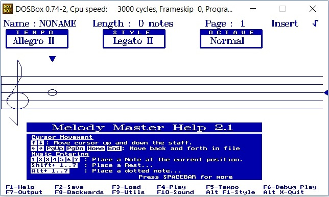

시스템 알림음
PX4는 중요한 시스템 상태와 문제를 음성으로 알리는 여러가지 표준 알림음을 지정해두었습니다(예시: 시스템 시작, 이륙 준비 완료, 배터리 경고 등)
알림음은 문자열(안시 악보 표기)로 정의하며 튠즈 라이브러리를 통해 코드로 재생합니다. 튠즈 라이브러리에는 기본 시스템 음 목록이 들어있습니다. 해당 내용은 lib/tunes/tune_definition.desc 파일을 참고하십시오.
PX4에는 기본음 또는 사용자 지정음을 재생(시험)할 때 활용할 모듈이 있습니다.
이 주제에서는 알림음을 만들고 시스템 알림 음으로 추가하는 일반 과정을 안내해드리도록 하겠습니다.
알림음 만들기
음 문자열은 안시 악보 표기 방식으로 정의합니다.
형식에 대한 자세한 정보는 QBasic PLAY 구문(위키북스)에서 찾아볼 수 있으며, tune_definition.desc 파일로 확인할 수 있습니다.
새 알림음을 만드는 가장 쉬운 방법은 뮤직 편집기를 활용하는 방법입니다. 이 방법으로 컴퓨터에서 음악을 편집하고 재생해볼 수 있으며, PX4에서 재생할 수 있는 형식으로 내보낼 수 있습니다.
안시 뮤직은 안시 BBS 시스템을 사용하던 시절에 유명한 방식이었기에, 최고의 편집 도구는 DOS 유틸리티입니다. 윈도우에서는 도스박스에서 멜로디 마스터를 사용하는 선택지가 있습니다.
프로그램을 사용하는 단계는 다음과 같습니다:
- 도스박스를 다운로드하여 설치합니다
- 멜로디 마스터를 다운로드하고 새 디렉터리로 압축을 해제합니다
- 도스박스 콘솔을 엽니다
- 멜로디 마스터 디렉터리를 아래와 같이 도스박스에서 마운트하십시오:
mount c C:\<path_to_directory\Melody21 - 다음 명령으로 Melody Master를 시작하십시오
c: start 일부 화면을 통해 선택지를 누른 후, 1을 눌러 멜로디 마스터를 띄우십시오: 
화면의 절반 하단부에서 도구 사용에 필요한 키보드 단축키를 안내해줍니다(악보를 움직이고 음표 길이를 선택할 수 있는 등의 작업 가능).
- 음악을 저장할 준비가 끝나면:
- F2 키를 눌러 이름 부여하고, 멜로디 마스터 설치 디렉터리의 /Music 하위 폴더에 저장하십시오.
- F7 키를 누른 후 우측 화면에서 하단으로 스크롤 이동하여 출력 형식을 ANSI로 설정하십시오. 파일은 멜로디 마스터 디렉터리 루트에 내보냅니다(동일한 이름이나, 파일 형식에 맞는 확장자가 따로 붙음).
파일을 여십시오. 출력 내용은 다음과 같습니다:

PX4에서 재생할 수 있는 문자열은
MNT와P64사이의150L1O3DL16CL32<B>C<AEL16A입니다.
알림음 시험
PX4에서 재생할 알림음을 새로 추가할 준비가 되었다면, tune_control 라이브러리를 활용하십시오. 예를 들어, 우리가 위 과정을 거쳐 "만든" 재생음을 시험하려면 다음 명령을 콘솔 또는 셸(예: MAVLink 셸)에 입력하십시오:
tune_control play -m "150L1O3DL16CL32<B>C<AEL16A"
특별하게도, tune_control은 실제 하드웨어(모의시험 프로그램 아님)에서만 나타납니다.
기존 알림음 바꾸기
알림음은 tune_definition.desc에 지정되어 있습니다.
기존 알림음을 바꾸려면, 파일을 별도로 복사한 후, PX4_DEFINE_TUNE 에 정의한 알림음 문자열을 새로 바꾸시면 됩니다.
새 알림음 추가
곧 추가 예정.